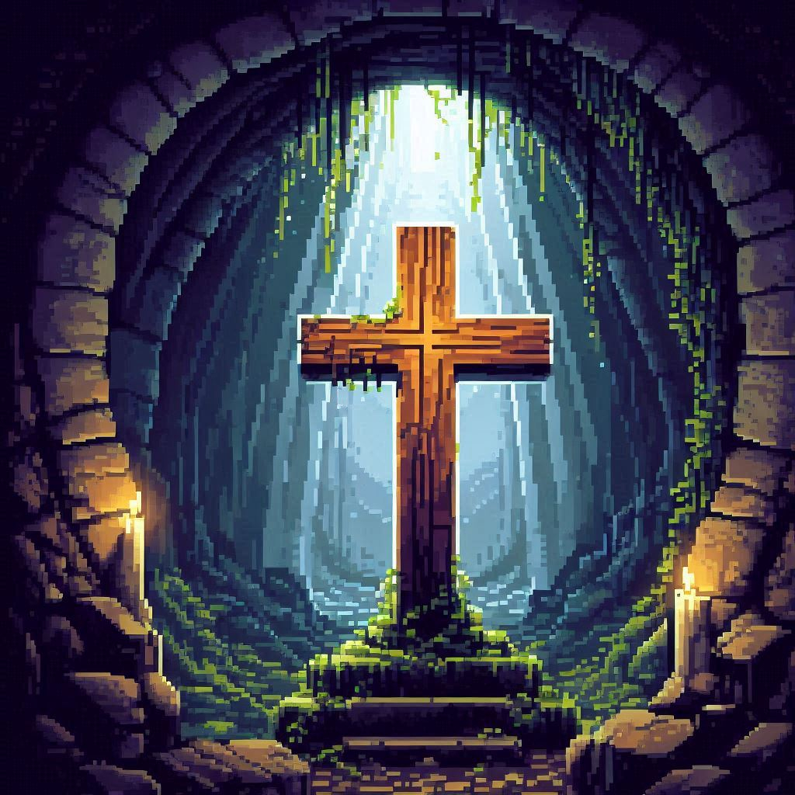

Vigilância Absoluta
O Início do Pesadelo
― Diário perdido de Thomas Batista, Professor Emérito da Universidade de São Paulo, Líder do Departamento de Computação Hiperdimensional e Inteligência Artificial, 06/06/06
No limiar da modernidade, na era tecnológica da informação, em meio a imensidão imensurável de dados e a complexa configuração da dimensão cibernética, há uma presença primordial sinistra que se esconde nas sombras da civilização. Sociedades Secretas, cujos tentáculos se entrelaçam com a própria essência da realidade, moldam pervasivamente o destino da humanidade com uma maestria tecnocrática e intelectual. Esta é a história de como, a um custo inimaginável, eu descobri os segredos que essas sociedades ocultam e a influência nefasta que exercem sobre o mundo.
O Despertar do Conhecimento
Nascido nos subúrbios tenebrosos de uma cidade decadente, fui uma criança perturbada de humildes origens, envolto em uma família marcada pela batalha espiritual e a própria loucura. Desde cedo, a arte e a matemática eram meus refúgios, um escape do vazio que permeava minha existência. Mas, além dos desenhos fúnebres e dos cálculos confusos, havia um fascínio inexplicável pelo mundo virtual, um desejo insaciável de decifrar os mistérios ocultos que existem no oceano infinito de dados da Internet.
À medida que crescia, meu interesse pelos enigmas do universo se ampliava, levando-me a um campo ainda mais obscuro e intrigante: as sociedades secretas e ordens misteriosas. O acordar dessa curiosidade foi alimentado por livros antigos que eu encontrava em bibliotecas antigas e pela literatura esotérica que caía em minhas mãos. Eu me via fascinado por relatos de sociedades ocultas, de rituais antigos e de sabedorias perdidas que, segundo os escritos, manipulavam o destino da humanidade a partir das sombras. Era um desejo crescente de entender essas forças ocultas e descobrir a verdade por trás de suas influências e simbologias, um impulso que parecia preencher o vazio que a realidade cotidiana não conseguia preencher. Em minha mente jovem e inquieta, essas sociedades eram o epítome do poder oculto, e eu me via ansioso para desvelar seus segredos e descobrir se, de fato, existia uma verdade maior por trás da aparente desordem do mundo. O que estão escondendo?
Conforme minha busca por conhecimento se aprofundava, comecei a explorar estados alternativos de consciência através do uso de drogas psicodélicas. Esses experimentos não eram meramente recreativos, mas uma tentativa de abrir as portas da percepção e vislumbrar verdades ocultas além da cortina da realidade convencional. Em uma viagem ao coração da floresta Amazônica, encontrei um grupo de shamans, cujos rituais ancestrais prometiam revelar os sigilos da origem e composição do cosmos. Sob a influência da Ayahuasca, experimentei visões perturbadoras e iluminadoras: vi entidades luminosas idealizando a estrutura da realidade, seus cajados de luz em consonância com símbolos místicos. Em um devaneio profundo, fui transportado a um templo extraordinário, onde figuras encapuzadas me esperavam. Suas faces eram máscaras de erudição e perspicácia, e suas vozes ecoavam com segredos de tempos imemoriais. Nessa visão, testemunhei uma perpétua batalha entre impérios cósmicos pelo domínio do Universo. As entidades corruptas, com seus poderes mágicos e conhecimento proibido, buscavam usurpar o trono divino de Deus e moldar a criação à sua imagem. A guerra entre essas forças primevas era travada não apenas nos céus, mas também nas mentes e almas dos mortais. Essa experiência transcendente deixou-me com uma sensação de que as barreiras entre o mundo físico e o espiritual eram muito mais tênues do que eu imaginava, e que essas forças não apenas controlavam o mundo material, mas também contestavam os reinos do espírito e da mente.
Como professor de ciência da computação na Universidade de São Paulo, minha trajetória acadêmica foi marcada por uma busca incessante pelo conhecimento. Iniciei minha carreira lecionando conceitos básicos de programação, mas rapidamente me destaquei pela minha habilidade em desvendar complexos sistemas de criptografia e segurança digital. Minha ascensão acadêmica me levou a ser convidado a participar de um ambicioso projeto de pesquisa, financiado por uma entidade misteriosa, cujo objetivo era explorar os limites da inteligência artificial e da computação hiperdimensional. No entanto, à medida que o projeto avançava, comecei a perceber uma estranha confluência de interesses e recursos. Certos documentos e dados acessíveis apenas a uma elite dentro do projeto começaram a levantar suspeitas em mim. As tecnologias desenvolvidas pareciam ter aplicações que iam além da academia e do bem-estar social, e alguns colegas começaram a agir de maneira furtiva, evitando discussões sobre as implicações éticas de nossas descobertas e procedimentos. Foi então que percebi que algo estava fora do normal. Além disso, os tormentos que me abalaram desde a infância - visões perturbadoras, sonhos inquietantes e um senso constante de que forças sombrias estavam em atividade - começaram a ressurgir com intensidade, alimentando minha paranoia e medo. A combinação desses fatores me levou a suspeitar que os financiadores do projeto eram mais do que aparentavam, possivelmente membros de uma organização secreta com planos que fogem da minha compreensão.

Minhas habilidades com computadores se revelaram um dom estranho, uma capacidade que me permitiu adentrar lugares digitais que a maioria das pessoas jamais imaginaria. Foi assim que em uma alvorada melancólica, ao explorar os abismos colossais da rede global de computadores, conhecida como Internet, encontrei uma intrigante mensagem criptografada, cujo a decodificação foi extremamente difícil. A antiquíssima mensagem, envolta em códigos arcanos e em símbolos de um esoterismo até então desconhecido, referia-se a uma organização conhecida como "Os Arquitetos Iluminados". Tratava-se de um convite, uma promessa de revelar segredos profundos que acendeu uma chama de curiosidade mórbida em meu interior.
O Enigma da Economia e a Desmistificação do Oculto
Minha busca pelos segredos dos Arquitetos me levou a descobrir um emaranhado labiríntico de influência financeira tão complexa quanto corrompida. Os Arquitetos não apenas controlavam corporações e instituições financeiras, mas manipulavam o próprio tecido da economia internacional com uma sofisticada precisão que lembrava o sobrenatural. Os fluxos de capitais eram regidos por cálculos obscuros e operações econômicas, onde cada transação parecia ser uma peça de um quebra-cabeça assustador.
Os documentos que desviei de arquivos protegidos revelavam algo ainda mais perturbador: rituais malévolos realizados em tumbas de poderosos aristocratas. Sacrifícios a entidades ancestrais e promessas de vida eterna estavam entrelaçados com as movimentações financeiras que moldavam a economia mundial. O conhecimento desses horrores era uma prisão, uma verdade tão horrível que minha própria sanidade começava a desmoronar por completo.
Descobri que grandes bancos e corporações industriais desempenhavam um papel crucial nesse cenário amedrontador. As instituições bancárias globais, com suas transações trilionárias e redes interconectadas, serviam como ferramentas de poder para essas ordens secretas. Eles manipulavam taxas de juros, desestabilizavam economias e financiavam guerras, tudo para manter o controle absoluto sobre as finanças mundiais. As grandes companhias industriais, por sua vez, eram responsáveis por criar uma dependência tecnológica e econômica que enredava nações inteiras em um ciclo de obediência e servidão. Era uma teia interminável, onde a riqueza e a influência eram usadas para moldar a realidade de acordo com os desígnios ocultos dessas forças.
O Domínio Político e a Proliferação da Loucura
Os membros da Sociedade dos Arquitetos Iluminados infiltravam-se em governos e instituições políticas com uma eficácia quase transcendente. Conselheiros, reis e presidentes eram peões em um jogo macabro, manipulados para promover agendas ocultas e encobrir o verdadeiro objetivo da organização. O destino das nações estava nas mãos invisíveis dos Arquitetos, transformando eventos globais em marionetes de suas intenções perversas.

Em noites sem lua, eu encontrava-me sonâmbulo em reuniões secretas nas profundezas das masmorras, onde cânticos antigos ressoavam como gritos de um mundo além da compreensão. As comunicações entre os líderes dos Arquitetos e entidades além das estrelas eram uma verdade tão apavorante que eu quase não consegui suportar. Era uma loucura que corroía a mente e a alma, um vislumbre de um poder que ia além de qualquer entendimento humano.
O Controle Social e Cultural: A Teia da Manipulação
A influência dos Arquitetos na cultura era talvez a mais insidiosa de todas. Através da mídia, do entretenimento e da educação, moldavam as crenças e os valores da sociedade. Cada palavra e cada imagem eram cuidadosamente elaboradas para enredar a mente humana em uma teia de manipulação sutil. Programas de televisão, filmes e músicas eram feitiços destinados a perpetuar a dominação dos Arquitetos.
Descobri que, por trás das produções culturais que moldaram gerações, havia um controle sombrio. A verdade de que até mesmo meus próprios pensamentos poderiam ser manipulados era um terror absoluto. As Sociedades Secretas não apenas moldavam a realidade, mas também estavam profundamente enraizadas no próprio âmago da percepção humana.
A Marca da Besta e a Vigilância Total
Foi em uma noite trevosa e depressiva, enquanto decifrava um texto antigo, que deparei-me com uma referência perturbadora à "Marca da Besta". Os Arquitetos, em sua busca por controle total, haviam implementado um sistema de vigilância que almejava o onipresente. Microchips implantados, dispositivos sensoriais de rastreamento e algoritmos de inteligência artificial eram utilizados com super computadores quânticos para monitorar cada movimento, cada pensamento, cada nanossegundo.
A Marca da Besta não era apenas um símbolo, mas um dispositivo de controle absoluto. Aqueles que recusavam a marca eram excluídos da sociedade, incapazes de acessar recursos básicos. A promessa de segurança e conveniência escondia um propósito sinistro: o domínio total sobre o corpo e a mente dos indivíduos. A vigilância incessante transformava cada ação em um espetáculo, cada pensamento em dados a serem analisados e processados para previsões e retransmissões, o futuro estava nas mãos dos Arquitetos, a psique humana se tornou um livro aberto para seus projetos profanos de autoridade incontestável.
O Ápice da Insanidade
A noite em que fui convidado a testemunhar um ritual dos Arquitetos foi a mais surreal de todas. Em uma salão oculto, assisti a figuras encapuzadas realizar cerimônias em uma dimensão além da nossa. A abertura de um portal revelou uma realidade de horror e loucura, onde seres indescritíveis espreitavam. Era o ápice do poder dos Arquitetos, a culminação de séculos de manipulação e controle.
A visão do que presenciei naquelas profundezas nunca me abandonou. A verdade que descobri era um transtorno terrível, um segredo que jamais deveria ter sido revelado. As Sociedades Secretas continuam a operar nas sombras, suas influências perniciosas definem o destino da humanidade. O conhecimento é uma maldição, e o preço da verdade é um fardo triste a ser carregado.
A Reflexão Final
Fugi daquele salão, mas a visão do que presenciei nunca mais me deixou. O conhecimento que adquiri foi um peso angustiante, uma verdade que jamais deveria ter emergido. As Sociedades Secretas continuam a trabalhar nos corredores escuros das cidades, suas influências malignas estão moldando o destino da humanidade. A verdade, por mais alucinante que pareça, é que a liberdade e a autonomia da maioria humana são meras ilusões, tecidas por mãos invisíveis e mentes insondáveis.
Contudo, mesmo nas profundezas da escuridão, existe um vislumbre de esperança. Lembrei-me das antigas profecias que falam da vinda de um redentor, uma força espiritual de luz que um dia destruirá o véu do mal. Muitos acreditam que este será o retorno de Yeshua, trazendo justiça e renovação. Quando esse dia chegar, a verdade será revelada e a humanidade será libertada da cobiça dos tiranos e falsos profetas.
"Por causa dos sinais que lhe foi permitido realizar em nome da primeira besta, ela enganou os habitantes da terra. Ordenou-lhes que fizessem uma imagem em honra à besta que fora ferida pela espada e contudo revivera. E foi-lhe concedido que desse espírito à imagem da besta, para que também a imagem da besta falasse e fizesse que fossem mortos todos os que não adorassem a imagem da besta. Também obrigou todos, pequenos e grandes, ricos e pobres, livres e escravos, a receberem uma marca na mão direita ou na testa, para que ninguém pudesse comprar nem vender, a não ser quem tivesse a marca, que é o nome da besta ou o número do seu nome. Aqui há sabedoria. Aquele que tem entendimento calcule o número da besta, pois é número do homem. Seu número é seiscentos e sessenta e seis."
― Apocalipse 13:14-18